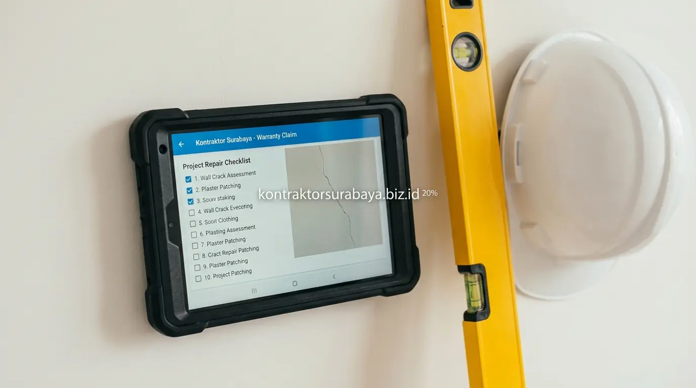

Banyak pemilik rumah baru yang tidak menyadari bahwa pelunasan pembayaran kepada kontraktor bukan berarti seluruh tanggung jawab kontraktor langsung berakhir. Ada satu periode penting yang sering diabaikan dalam diskusi awal proyek: masa pemeliharaan, atau yang dalam kontrak konstruksi formal dikenal sebagai masa retensi.
Pada masa ini, kontraktor masih memiliki kewajiban untuk menangani kerusakan-kerusakan tertentu yang muncul setelah bangunan diserahterimakan, sementara klien memiliki hak untuk menahan sebagian pembayaran sebagai jaminan. Memahami klausul ini sejak awal kontrak adalah langkah penting sebelum Anda mempercayakan proyek kepada kontraktor rumah.
1. Fungsi Masa Pemeliharaan dalam Kontrak Konstruksi Rumah
Masa pemeliharaan memberi jaminan bahwa kontraktor tetap bertanggung jawab atas kualitas hasil kerja untuk periode tertentu setelah serah terima, sehingga klien tidak langsung kehilangan perlindungan begitu pembayaran terakhir dilunasi.
Ketentuan ini menjadi bagian penting dalam kontrak kerja karena beberapa masalah—seperti kebocoran kecil atau retak rambut pada dinding—baru terlihat setelah rumah digunakan beberapa waktu. Masa pemeliharaan memberi ruang bagi klien untuk melaporkan dan meminta perbaikan tanpa biaya tambahan selama periode yang disepakati. Kenali lebih jauh tentang standar kerja kami di halaman tentang kami.

2. Cakupan Kerusakan yang Biasanya Ditanggung dalam Masa Pemeliharaan
Kebocoran atap, retak dinding non-struktural, kerusakan instalasi akibat kesalahan pemasangan, dan keramik yang lepas atau pecah akibat pemasangan yang kurang tepat adalah empat jenis kerusakan yang biasanya ditanggung dalam masa pemeliharaan.
- Kebocoran Atap: Yang muncul akibat kesalahan pemasangan waterproofing umumnya menjadi tanggung jawab kontraktor selama masa pemeliharaan. Kebocoran yang baru terlihat saat musim hujan pertama adalah contoh klasik kasus yang tercakup dalam garansi ini.
- Retak Dinding Non-Struktural: Akibat proses pengeringan material umumnya masih tercakup dalam garansi selama tidak disebabkan faktor eksternal seperti gempa atau pergerakan tanah yang signifikan.
- Kerusakan Instalasi Akibat Kesalahan Pemasangan: Seperti kebocoran pipa pada sambungan atau panel listrik yang tidak bekerja optimal, umumnya menjadi tanggung jawab kontraktor untuk diperbaiki tanpa biaya tambahan.
- Keramik yang Lepas atau Pecah: Akibat pemasangan yang kurang tepat—misalnya tanpa lapisan semen yang merata atau tanpa nat yang benar—biasanya masih tercakup dalam cakupan garansi masa pemeliharaan.
3. Berapa Lama Durasi Umum Masa Pemeliharaan Konstruksi?
Durasi masa pemeliharaan bervariasi tergantung kesepakatan dalam kontrak kerja masing-masing proyek, sehingga penting bagi klien untuk memastikan jangka waktu ini dicantumkan secara jelas dan tertulis sebelum menandatangani kontrak.
Tidak ada durasi baku yang berlaku universal untuk semua proyek, karena jangka waktu masa pemeliharaan dapat dipengaruhi oleh skala proyek, jenis pekerjaan, maupun kebijakan masing-masing kontraktor. Pada proyek pemerintah, durasi ini biasanya diatur dalam regulasi pengadaan yang berlaku. Untuk proyek swasta, klarifikasi durasi ini sejak awal negosiasi kontrak menjadi langkah penting yang tidak boleh dilewatkan. Lihat standar kontrak yang kami terapkan di halaman kontraktor rumah Surabaya.
4. Bagaimana Sistem Retensi Pembayaran Melindungi Klien?
Sistem retensi menahan sebagian kecil dari total nilai kontrak sebagai jaminan, yang baru dibayarkan penuh kepada kontraktor setelah masa pemeliharaan berakhir tanpa adanya klaim perbaikan yang belum diselesaikan.
Mekanisme ini memberi insentif bagi kontraktor untuk tetap responsif terhadap laporan kerusakan selama masa pemeliharaan, karena pencairan dana retensi bergantung pada penyelesaian kewajiban perbaikan yang menjadi tanggung jawab mereka sesuai kesepakatan dalam kontrak kerja. Tanpa sistem ini, kontraktor yang tidak profesional bisa saja berhenti merespons setelah menerima pembayaran terakhir.
5. Prosedur Mengajukan Klaim Perbaikan selama Masa Pemeliharaan
Melaporkan kerusakan secara tertulis, menyertakan dokumentasi foto kondisi kerusakan, memeriksa klausul cakupan garansi dalam kontrak, dan menentukan tenggat waktu perbaikan yang wajar adalah empat langkah mengajukan klaim perbaikan selama masa pemeliharaan.
- Melaporkan Kerusakan Secara Tertulis: Memberi jejak dokumentasi yang jelas mengenai kapan dan apa yang dilaporkan kepada kontraktor. Pesan WhatsApp atau surel sudah dianggap tertulis asal terdokumentasi dan dapat dijadikan bukti.
- Menyertakan Dokumentasi Foto Kondisi Kerusakan: Membantu kontraktor memahami masalah sebelum melakukan kunjungan langsung ke lokasi, sekaligus menjadi bukti yang kuat apabila terjadi perselisihan mengenai asal-usul kerusakan.
- Memeriksa Klausul Cakupan Garansi dalam Kontrak: Memastikan jenis kerusakan yang dilaporkan memang termasuk dalam tanggung jawab kontraktor sebelum mengajukan klaim, sehingga proses komunikasi berjalan lebih efisien.
- Menentukan Tenggat Waktu Perbaikan yang Wajar: Membantu memastikan proses perbaikan tidak berlarut-larut tanpa kejelasan, misalnya dengan menyepakati jadwal perbaikan secara tertulis setelah klaim diterima.
6. Perbedaan Kerusakan yang Ditanggung Garansi vs Akibat Kesalahan Penggunaan
Kerusakan akibat kesalahan konstruksi umumnya ditanggung garansi, sementara kerusakan akibat kelalaian penggunaan oleh penghuni—seperti kebocoran akibat modifikasi tanpa izin—biasanya berada di luar cakupan tanggung jawab kontraktor.
Perbedaan ini penting dipahami klien sejak awal, karena tidak semua kerusakan yang muncul selama masa pemeliharaan otomatis menjadi tanggung jawab kontraktor. Kerusakan yang terbukti disebabkan oleh perubahan atau penggunaan yang tidak sesuai dengan rekomendasi awal saat serah terima bangunan biasanya tidak masuk dalam cakupan garansi. Lihat portofolio proyek rumah yang telah kami selesaikan di halaman galeri proyek.
7. Kesalahan yang Membuat Klien Kehilangan Hak Klaim Garansi
Tidak membaca klausul garansi secara detail, terlambat melaporkan kerusakan, melakukan modifikasi tanpa sepengetahuan kontraktor, dan tidak menyimpan dokumen kontrak dengan baik adalah empat kesalahan yang membuat klien kehilangan hak klaim garansi.
- Tidak Membaca Klausul Garansi Secara Detail: Membuat klien tidak memahami batasan cakupan yang sebenarnya berlaku dalam kontrak, sehingga ekspektasi tidak sesuai dengan kenyataan ketika mengajukan klaim.
- Terlambat Melaporkan Kerusakan: Hingga melewati masa pemeliharaan yang disepakati membuat klaim menjadi tidak dapat diajukan lagi, meski kerusakan tersebut jelas merupakan akibat dari kesalahan konstruksi.
- Melakukan Modifikasi Tanpa Sepengetahuan Kontraktor: Berisiko membatalkan garansi pada bagian yang terkena dampak modifikasi tersebut, misalnya membobok dinding untuk instalasi tambahan tanpa memberitahu kontraktor terlebih dahulu.
- Tidak Menyimpan Dokumen Kontrak dengan Baik: Menyulitkan klien membuktikan kesepakatan awal apabila terjadi perselisihan mengenai cakupan garansi atau durasi masa pemeliharaan yang berlaku.
"Masa pemeliharaan bukan sekadar klausul formalitas dalam kontrak—ia adalah bukti nyata komitmen kontraktor terhadap kualitas kerja yang bisa dipertanggungjawabkan bahkan setelah proyek selesai." — Erlang Sinatrya, Lead Project Engineer Kontraktor Surabaya
Memahami cakupan dan durasi masa pemeliharaan sejak awal membantu klien memiliki perlindungan yang jelas setelah rumah selesai dibangun. Pelajari cakupan layanan konstruksi rumah pada halaman jasa kontraktor rumah, atau kenali lebih jauh tim kami pada halaman tentang kami.